Lama Lama
Captures desktop

Pages internes
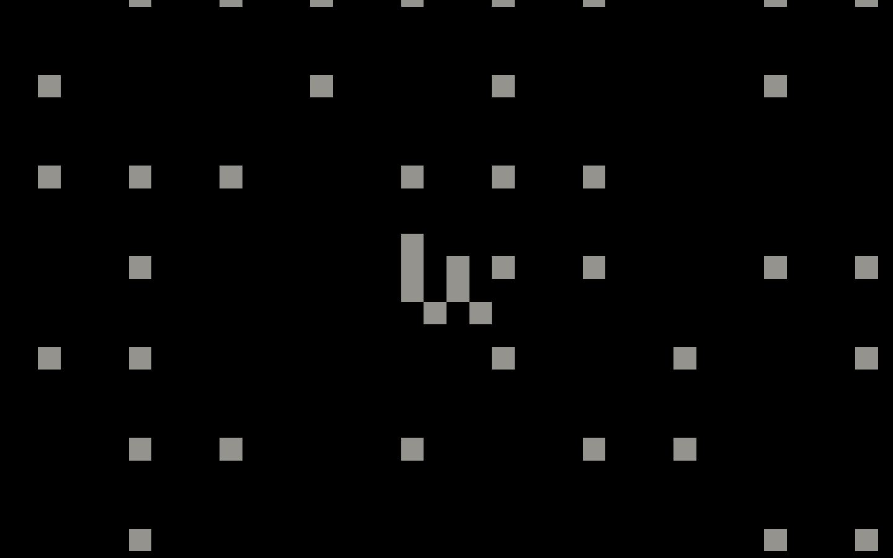
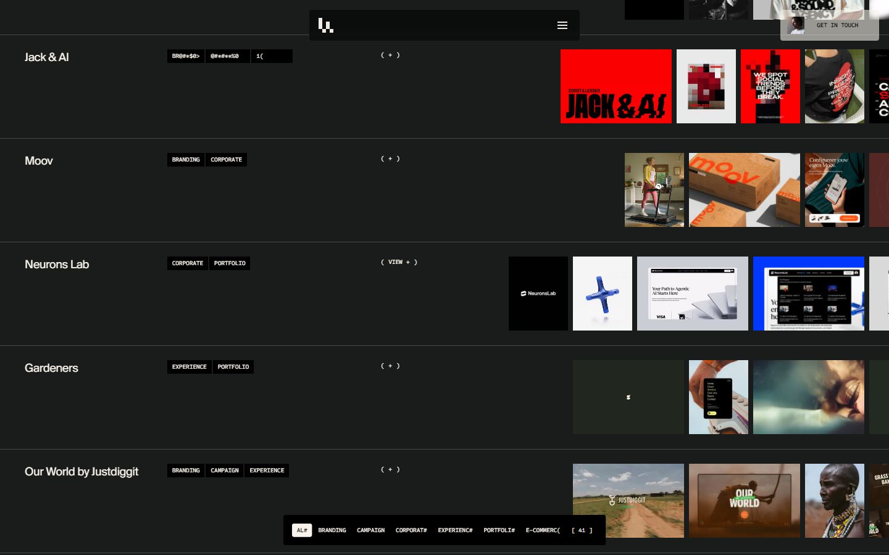
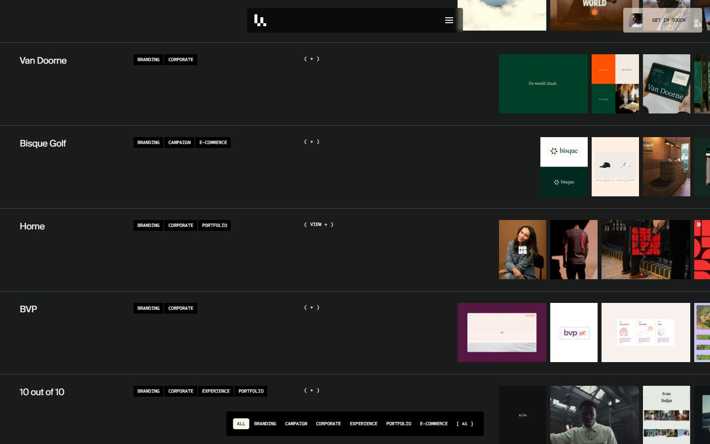
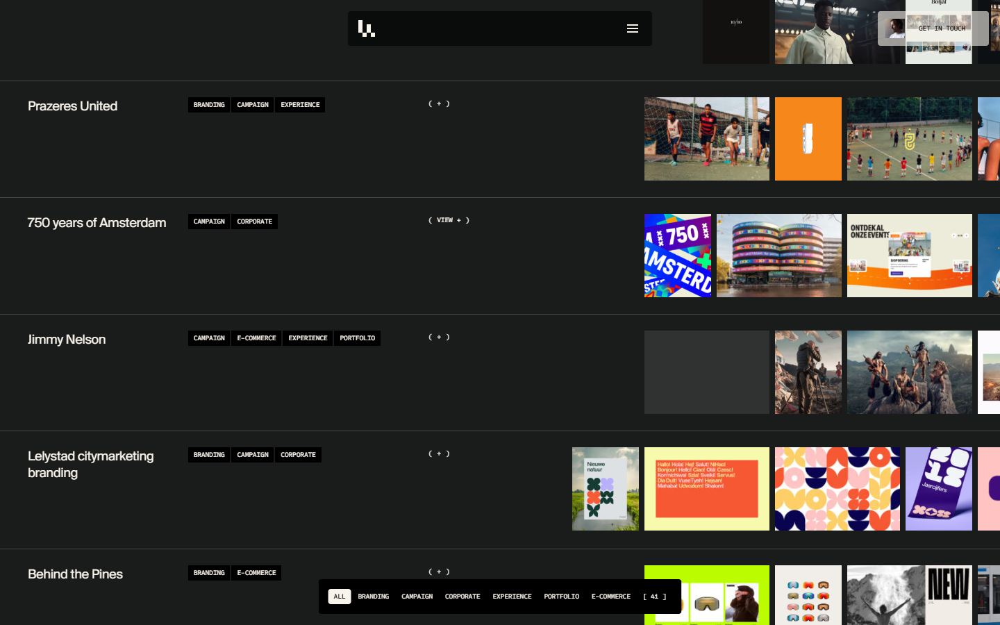
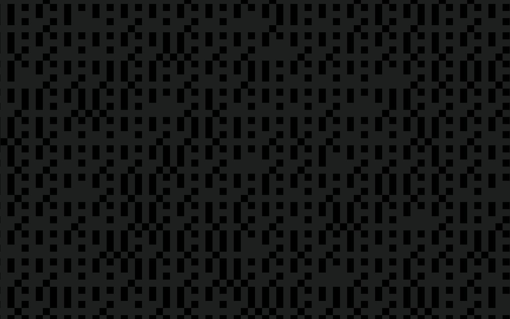
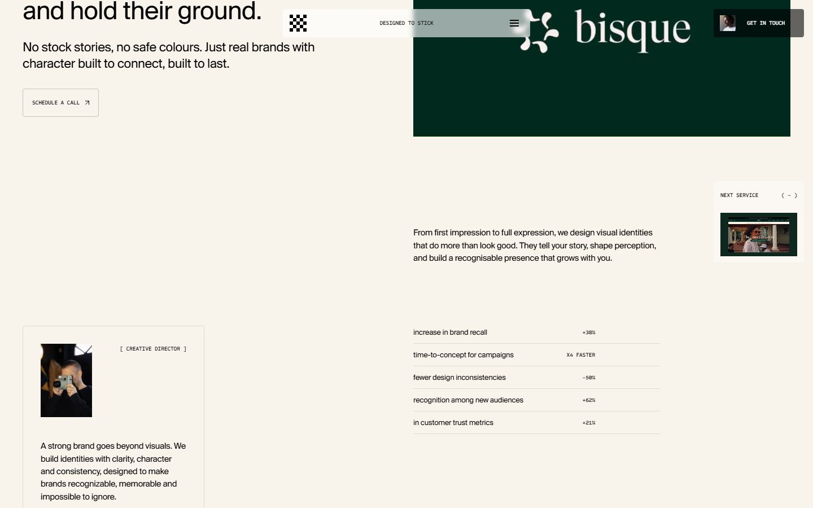
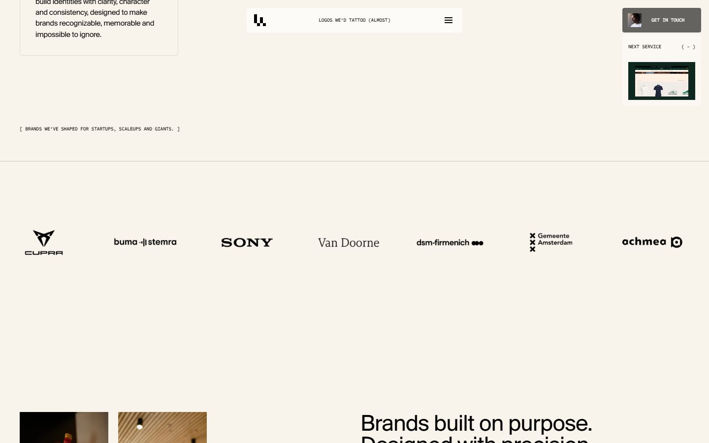
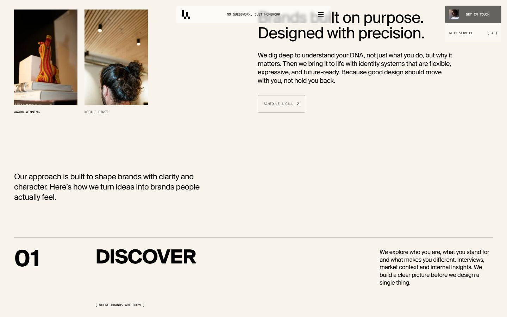
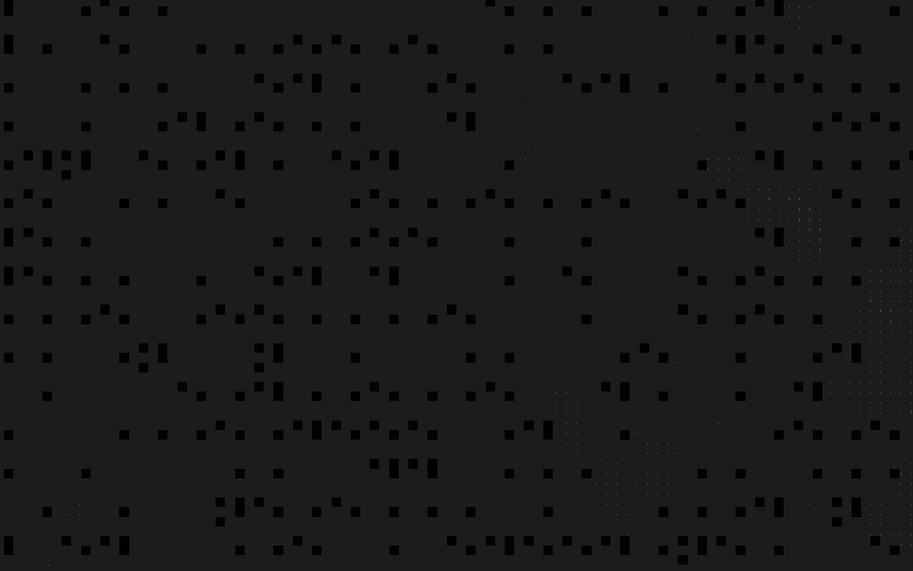
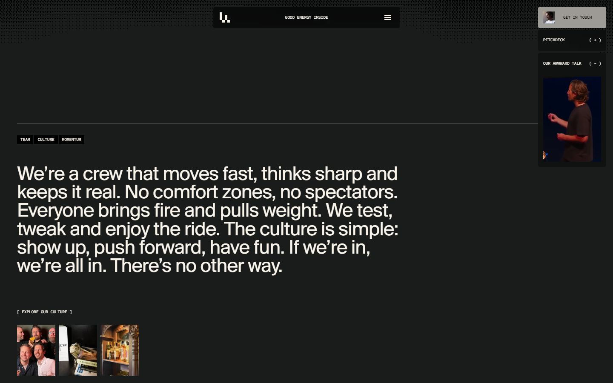
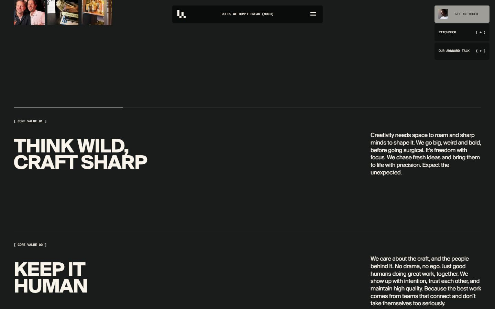
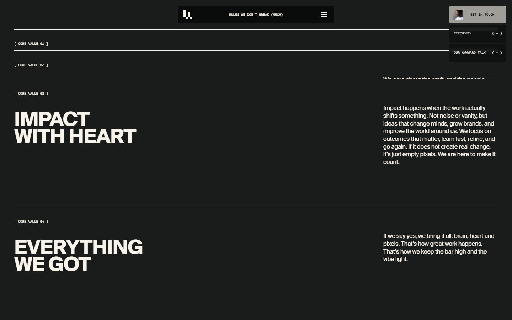
Mobile
Stack détectée
GSAP, Lenis, ScrollTrigger, SplitText/SplitType, Swiper, Swup, Virtual scroll, Vue, WebGL, WordPress
Versions : GSAP 3.11.0 · Three.js r?
Shaders GLSL personnalisés extraits : 12 (voir shaders.glsl)
Design tokens
Couleurs (fonds, pondérées par surface)
#f9f4eb · #000000 · #ff0000
Couleurs de texte
#f9f4eb · #000000 · #ffffff · #1a1c1c
Polices utilisées (par volume de texte)
SuisseBPIntl · Sometype
Fichiers de police chargés
Typographie
| Élément | Police | Taille | Graisse | Interligne | Interlettrage | Casse |
|---|---|---|---|---|---|---|
| h1 | SuisseBPIntl, Helvetica, Arial, sans-serif | 72px | 700 | 57.6px | -1.44px | uppercase |
| h2 | SuisseBPIntl, Helvetica, Arial, sans-serif | 48.048px | 400 | 43.2432px | -0.96096px | none |
| h3 | Sometype, Helvetica, Arial, sans-serif | 12.048px | 500 | 21.6864px | -0.24096px | uppercase |
| h4 | SuisseBPIntl, Helvetica, Arial, sans-serif | 17.9083px | 400 | 25.0716px | -0.358166px | none |
| p | SuisseBPIntl, Helvetica, Arial, sans-serif | 20.04px | 400 | 24.048px | -0.4008px | none |
| a | SuisseBPIntl, Helvetica, Arial, sans-serif | 16px | 400 | 22.4px | -0.32px | none |
| button | SuisseBPIntl, Helvetica, Arial, sans-serif | 16px | 400 | 22.4px | -0.32px | none |
| body | Sometype, "sans-serif" | 16px | 400 | 16px | normal | none |
Échelle des tailles de texte
16.014px (430) · 10px (277) · 40px (45) · 32px (43) · 16px (39) · 20.04px (30) · 48.048px (28) · 17.9083px (27) · 12.048px (15) · 20px (14) · 14px (12) · 72px (12) · 76.75px (8) · 23.025px (8) · 80px (6) · 38.375px (4)
Arrondis
4px · 2px · 9999px
Transitions CSS fréquentes
Points de rupture (media queries)
1440px · 1000px · 800px · 601px · 799px · 399px · 600px · 999px · 599px · 1280px · 1600px · 1279px
Animations CSS (@keyframes)
spin
Variables CSS (:root)
--ll-margin-desktop: 2.5rem; --ll-gutter-desktop: 1.5rem; --ll-cols-desktop: 12; --ll-margin-mobile: 1rem; --ll-gutter-mobile: .625rem; --ll-cols-mobile: 6; --ll-grid-gap: 1.5rem; --ll-col-count: 12; --ll-grid-margin: 2.5rem; --spacing-xs: max(calc(8 / 16 * 1rem), calc(12 / 1440 * 100vw)); --spacing-sm: max(calc(12 / 16 * 1rem), calc(16 / 1440 * 100vw)); --spacing-md: max(calc(16 / 16 * 1rem), calc(24 / 1440 * 100vw)); --spacing-lg: max(calc(24 / 16 * 1rem), calc(32 / 1440 * 100vw)); --spacing-xl: max(calc(32 / 16 * 1rem), calc(48 / 1440 * 100vw)); --spacing-2xl: max(calc(48 / 16 * 1rem), calc(64 / 1440 * 100vw)); --spacing-hero: max(calc(110 / 16 * 1rem), calc(90 / 1440 * 100vw)); --section-3xs: max(calc(10 / 16 * 1rem), calc(20 / 1440 * 100vw)); --section-2xs: max(calc(20 / 16 * 1rem), calc(40 / 1440 * 100vw)); --section-xs: max(calc(30 / 16 * 1rem), calc(60 / 1440 * 100vw)); --section-sm: max(calc(40 / 16 * 1rem), calc(80 / 1440 * 100vw)); --section-md: max(calc(60 / 16 * 1rem), calc(120 / 1440 * 100vw)); --section-lg: max(calc(80 / 16 * 1rem), calc(160 / 1440 * 100vw)); --section-xl: max(calc(100 / 16 * 1rem), calc(200 / 1440 * 100vw)); --section-2xl: max(calc(110 / 16 * 1rem), calc(220 / 1440 * 100vw)); --section-3xl: max(calc(120 / 16 * 1rem), calc(240 / 1440 * 100vw)); --section-4xl: max(calc(160 / 16 * 1rem), calc(320 / 1440 * 100vw)); --tw-shadow: 0 0 #0000; --tw-shadow-colored: 0 0 #0000; --tw-translate-y: 50%; --tw-translate-x: 100%; --content-inline: calc(((100vw - (2 * var(--ll-grid-margin) + (var(--ll-col-count) - 1) * var(--ll-grid-gap))) / var(--ll-col-count)) * 6 + 5 * var(--ll-grid-; --content-boxed: calc(((100vw - (2 * var(--ll-grid-margin) + (var(--ll-col-count) - 1) * var(--ll-grid-gap))) / var(--ll-col-count)) * 8 + 7 * var(--ll-grid-; --black: 0 0 0; --white: 255 255 255; --offBlack: 1 1 1; --dark: 26 28 28; --red: 231 93 96; --green: 208 255 126; --pink: 255 198 218; --blue: 220 242 244; --offWhite: 249 244 235; --bgPrimary: var(--dark); --textPrimary: var(--offWhite); --textSecondary: var(--offWhite); --signal: var(--offWhite); --content-spacing: var(--section-sm);
Structure de la home
Hauteur : 900 px — 3114 nœuds DOM — canvas 3, vidéos 24, images 131
| # | Bloc | Hauteur | Titre | Médias |
|---|---|---|---|---|
| 1 | div .ll-scroller js-scroller lenis | 900 | A creative digital agency that goes all in or not at all. | 100 |
Navigation : Work · Branding · Websites · E-commerce · Marketing · About us · Careers · Contact · Schedule a call Schedule a call Schedule · Start a project Start a project Start a · Get in touch Get in touch Get in touch
Boutons / CTA : Welcome · Who we are · What we do · Our vibe · Core values · What we believe · The work · Awards · Clients · Let's talk
SEO
Plan des titres
Performance (mesure locale, Chrome headless, connexion non bridée)
Mobile
Fichiers
captures/ : arrivée, scroll desktop (1440×900), pleine page, pages internes, mobile (390×844 @2x) ; vidéo de scroll dans la release GitHub « videos » (lien en haut de fiche)page.html : DOM rendu · styles.css : CSS chargé · scripts/ : JS chargé (index dans _index.json) · shaders.glsl : shaders extraits · rea-bundle.json : analyse REA du bundle (chunks, routes, endpoints)